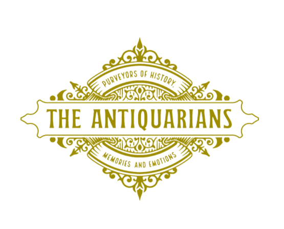

{% extends 'main.html' %}
{% load static %}
{% block content %}
Home

Добредојдовте на е-продавницата за стари работи
The Antiquarians
Веруваме дека секој производ има приказна за раскажување.
Открите широк избор на автентични и тешко достапни компоненти за обновување и оживување на вашите сакани
винтиџ предмети. Од стари хардвер и стари делови од апарати до ретка електроника и сложени механизми за
часовници, нашата е-продавница е засолниште за ентузиасти кои сакаат да за зачуваат автентичноста и
изработата на нивните негувани богатства.
Најдете го делот што недостасува што го комплетира вашиот проект за реставрација и оживете ги вашите стари
предмети со нашата богата колекција на стари делови.
{% endblock content %}